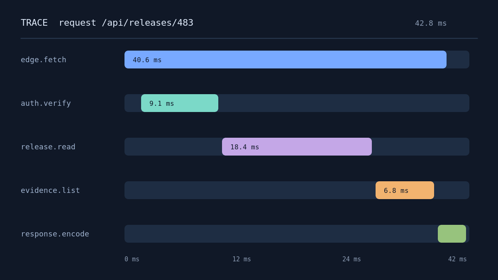

Designing reliable AI-assisted delivery systems
Generating code is becoming cheap. Establishing that the result is correct, operable, and worth merging remains the engineering work.
Body, links, and inline code
A useful delivery system makes evidence part of the path, not an activity postponed until the end. The implementation should connect product intent to a testable outcome, record the acceptance_boundary, and keep the proof close enough to the change that a reviewer can challenge it. This is why an integrated delivery loop matters more than the amount of generated code. This visited reference also demonstrates the secondary link state.
ভালো সফটওয়্যার ডেলিভারি কেবল দ্রুত কোড লেখার বিষয় নয়। সঠিক উদ্দেশ্য, যাচাইযোগ্য ফলাফল এবং পরিবর্তনের প্রমাণ—এই তিনটি একই প্রবাহে যুক্ত না হলে গতি শেষ পর্যন্ত ঝুঁকি বাড়ায়।
The control system#
The model is one component. The system around it decides what context enters, what changes are permitted, which evidence is required, and who can accept the remaining risk.
A minimum delivery loop#
Every change should move through a small, explicit loop that is cheap enough to use continuously:
- State the user-visible outcome.
- Define one observable success condition.
- Name the failure mode that matters most.
- Implement the smallest coherent slice.
- Collect evidence at the boundary.
The review boundary#
Review becomes substantially faster when the artifact exposes the intended boundary instead of asking the reviewer to reconstruct it from a diff.
- Keep contracts explicit.
- Make failure visible.
- Preserve logs that explain the rejected path.
- Separate environmental failure from product failure.
- Attach the smallest persuasive proof.
A generated implementation is a proposal. The evidence attached to it is the argument for accepting that proposal.
Code block — horizontally scrollable
type Evidence = {
boundary: string;
checks: readonly string[];
observedAt: Date;
};
export async function verifyDelivery(
release: Release,
probes: readonly Probe[],
): Promise<Evidence> {
const checks = await Promise.all(
probes.map((probe) => probe.run(release)),
);
return { boundary: "public-api → durable-record → observable-result", checks, observedAt: new Date() };
}A narrow comparison#
| Mode | Primary proof | Risk |
|---|---|---|
| Exploration | Working interaction | Hidden assumptions |
| Steel thread | End-to-end boundary | Narrow coverage |
| Production | Behaviour and operations | Change cost |
The benchmark matrix#
The full-bleed treatment is reserved for content that needs the room. At 1440px this table reaches 1180px and remains centered on the viewport. At narrow widths the table keeps its column geometry and scrolls inside a keyboard-focusable frame.
| Runtime | Cold ms | P50 ms | P95 ms | P99 ms | Req/s | CPU % | RAM MB | Errors | Cost / 1M |
|---|---|---|---|---|---|---|---|---|---|
| Workers | 12 | 18 | 31 | 46 | 18,420 | 41 | 128 | 0.02% | $0.31 |
| Node 24 | 186 | 22 | 44 | 73 | 12,860 | 58 | 412 | 0.04% | $0.48 |
| Bun 1.3 | 94 | 19 | 38 | 59 | 15,730 | 49 | 286 | 0.03% | $0.39 |
| Deno 2.4 | 121 | 21 | 41 | 64 | 14,510 | 52 | 304 | 0.03% | $0.42 |
The system shape#
Raster image

The surface stays quiet so the evidence can be loud. Tables retain their structure, code keeps its natural width, and diagrams participate in the same theme without becoming screenshots.